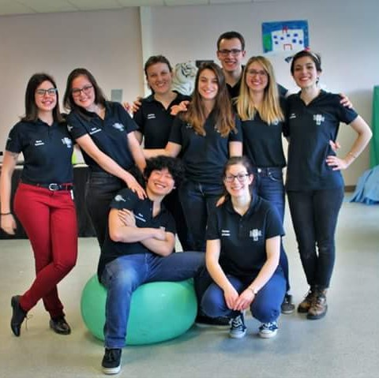
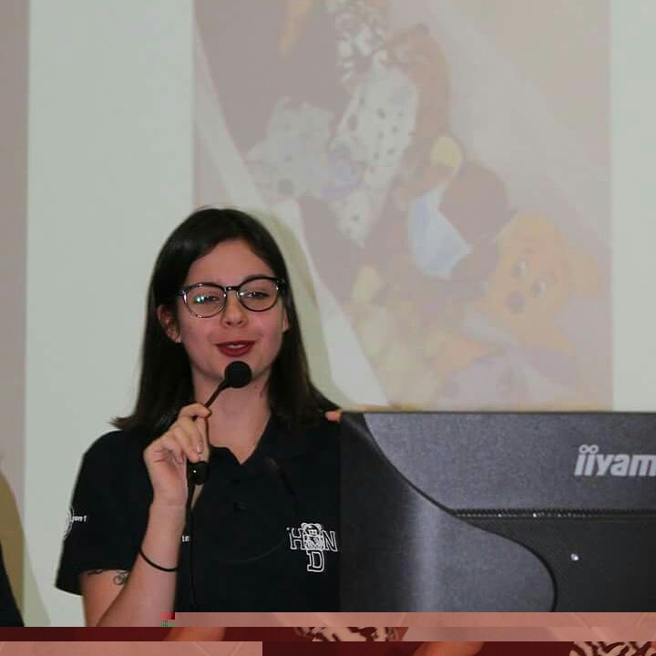
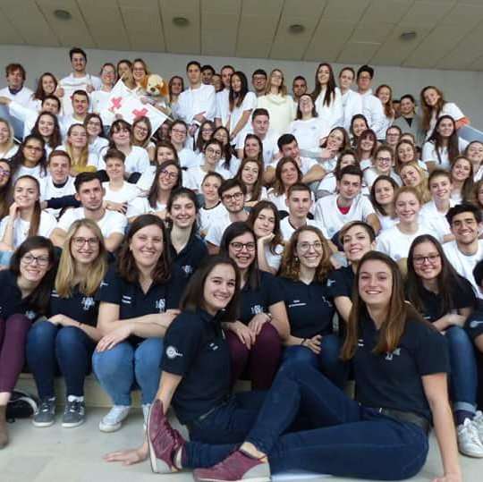

|  | La gestion d'équipe est une compétence à developper tout au long d'un mandat associatif, d'autant plus quand on est présidente de l'association. |
|
| La prise de parole en public, un challenge |
 | La prise de parole devant un amphithéâtre est un réel exercice qui n'est pas si facile que cela, néanmoins la bonne prise de parole en public reflète l'image de l'association. |
| L'organisation d'évenements |
 | Evidemment l'organisation d'un évènement ne peut se faire seule, mais il est important de trouver sa place dans une organisation casi militaire ! |